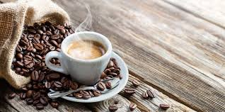
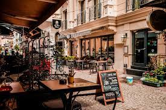
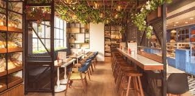

Experience the warmth and genuine atmosphere of a community-centered café that cherishes every visitor like family. Our welcoming staff and cozy environment make it the perfect spot for your daily coffee, a casual meeting, or relaxing alone time.
Discover a cozy spot where coffee and comfort blend in perfect harmony. Established in 2005, SunnySide is your go-to place to unwind and indulge in the finest coffee in town. Our commitment to quality and community makes every visit memorable.
Our carefully selected beans come from the best growers around the world, ensuring a diverse and flavorful range of brews. We pride ourselves on our artisanal approach and the unique techniques we use to brew the perfect cup every time.
From hearty breakfasts to delectable pastries, our menu is crafted to satisfy every palate. Each dish is prepared with locally sourced ingredients, catering to health-conscious customers as well as those looking to indulge.
Join us for weekly events that bring our community together, from poetry readings to music nights. Our café serves as a cultural hub in the neighborhood, hosting a variety of events that foster relationships and promote local talents.
"The best café in town! The atmosphere is always welcoming and the coffee is always top-notch."
"I love the variety of their menu and the community events that make every visit unique."
"SunnySide Café is my second home. The staff are friendly, and the pastries are divine."
"Every visit feels personal. They remember your name and your order. It’s like being part of a family."
"Their commitment to sustainability and community involvement really sets them apart. I support them wholeheartedly."